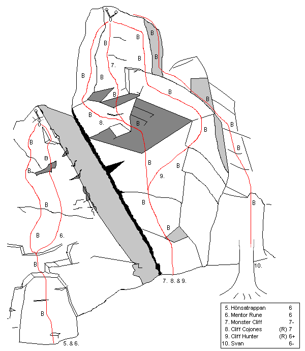

Soffabacken
Lat: 56.08242976119188
Long: 13.114070892333984
<div style="float: right; margin-left: 10px; padding: 3px; border: solid 1px #cccccc;">
<googlemap width=400 height=350 lat="56.08242976119188" lon="13.114070892333984" zoom="9" type="map" controls="small">
56.08242976119188,13.114070892333984,Soffabacken
</googlemap>
</div>
Allmänt
Soffabacken är en fin klippa i en ravin på söderåsen i mellersta Skåne. Här finns välbultade sportklätterturer. Var vänlig att beakta parkeringsinformationen i föraren, bommen vid vägen kan vara stängd ibland. I utstegen finns en del lös sten, så använd hjälm.
Hitta hit
Ni som kör
från Helsingborg
ska köra mot Åstorp, sväng av mot Kristianstad/Hässleholm . Du kör nu på väg 21 . Sväng Höger mot Västra Sönnarslövs Kyrka/Stenestad . Efter ett tag passeras ett grustag på vänster sida . Följ vägen mot Stenestad . Ett par kilometer in på denna väg finns det tre små skogsvägar som är blockerade med bommar. Den första leder till Huvudväggen och den tredje till Solväggen.
För er som kommer
från Malmö/Lund
kör motorvägen mot Göteborg. Vid avfart Lomma ta väg 103 mot Lund som sedan övergår i väg 108 mot Kävlinge, Kör mot Röstånga , genom Teckomatorp och rakt genom Svalöv. Fortsätt väg 106 mot Kågeröd och vidare mot Stenestad. I Stenestad T-kors, höger mot Klippan. När man kommer från detta hållet är det givetvis den första "bommade" skogsvägen som leder till Solväggen och den tredje som leder till Huvudväggen
Detaljerad vägvisning
Huvudväggen
<div style="float: right; margin-left: 10px; padding: 3px; border: solid 1px #cccccc;">
<googlemap version="0.9" lat="56.080143" lon="13.103085" zoom="14" width="300" height="400" selector="no" controls="small">
6#B2FFFFFF
56.080442, 13.101411
56.080586, 13.102226
56.080562, 13.103085
56.081065, 13.103685
56.081616, 13.106132
56.08152, 13.107505
56.082071, 13.108792
56.082573, 13.108578
56.082813, 13.109651
56.082597, 13.110938
56.082214, 13.111711
</googlemap></div>
Flertalet personer har virrat runt i området och aldrig hittat någon av de beskrivna klipporna. Här följer därför en mer detaljerad vägvisning till Soffabacken och huvudväggen (Softabacken).
Följ anvisningarna ovan för att komma på vägen mellan Stenestad och Klippan. Notera att det i Stenestad inte finns någon skylt mot Klippan.
Det finns en liten (ca 50 cm hög) hemmagjord skylt på vilken det står "Soffabacken". Det är på håll svårt att utläsa vad som står på skylten, som är gjord i naturträ (gulbrun). Kommer ni från Stenestad är skylten placerad på vänster sida någon meter in från vägen. Det kan vara enklare att söka efter skylten än att räkna de bommade grusvägarna. Grusvägen där skylten står är också stängd med en bom. Parkera direkt till vänster in på grusvägen, alternativt på andra sidan den stora vägen. Se till att inte blockera in och utfart.
Följ grusvägen österut som snabbt övergår till en gräsbeklädd stig ett par hundra meter in i skogen. Du kommer fram till en t-korsning. Här tar du vänster och går 20-30 meter. En mycket otydlig stig leder därefter in snett till höger. Följ denna stig, som blir tydligare efterhand, ca 50 meter och du kommer då ut till en öppen bokskog. Stigen svänger här till höger och klättrar upp ett par meter på en höjdplatå. Snedda i stigens riktning över höjdplatån och du ser efter 50-100 meter att terrängen börjar luta brant ner. Du har nu huvudväggen snett ner till höger. Nedgången är mycket brant. Någon snäll person har satt upp ett tunnare rep att hålla sig i.
Detta är den närmaste vägen till huvudväggen. Från parkeringen vid vägen ska det högst ta 10-15 minuter. Väljer du att parkera vid någon av de andra bommade grusvägarna och utgå därifrån är risken stor att du går vilse i området.
Kristallväggen
Enklaste sättet att ta sig till Kristallväggen är nog att ta den tredje bommade grusvägen om du kommer norrifrån, och den första om du kommer söderifrån. Parkera vid bommen, följ sedan grusvägen som går cirka 400m fram till en delvis grusbelagd öppning. Snett upp till vänster fortsätter en stig. Följ den cirka 100-150m norrut och vik därefter av österut in i skogen cirka 50m tills du kommer till kanten av en mindre skogsbeklägg ravin som löper i nord-sydlig riktning. Nere i ravinen finns scouternas vindskydd, och själva Kristallväggen är precis i nerkanten av ravinen på dess västra sida, precis där du kommer fram. Om du kommer fram till en öppning med fin utsikt nord-ost mot solväggen så är du antagligen bara 30m norr om Kristallväggens topp. Den syns dock inte ifrån där du står även om du står precis över den. Gå ner i ravinen 30m bort till höger och håll till vänster på nervägen så bör du hitta den på vänstra sidan, alternativt gå ner till vindskyddet och därefter tillbaka rakt upp för den västra sidan av ravinen.
Översikt
Notera att avstånd och storleksförhållandena är felaktiga på kartan. Pilen till parkeringen gäller den som beskrivs under rubriken "Detaljerad vägvisning till Soffabacken". Norr är till höger på kartan.
Kristallväggen
Kristallväggen ligger upp i slänten vid scouternas permanenta vindskydd. Man kan grovt säga att klippan återfinns mitt emot Solväggen en bra bit upp i backen. Den ligger INTE där den är placerad på den tredimensionella kartan ovan!! Befinner man sig vid solväggen så bör den dock gå att hitta.
- 1
- Flugornas herre
- 4/4+
- En perfekt led för nybörjaren, stora grepp och lätta klipp. Bultad 01. Har firningsankare
- 2
- Crystal Palace
- 5-
- Kort överhängande led, följ kristall-linjen och undvik att gå för långt till vänster. Bultad 01. Har firningsankare
- 3
- ģkebuga bort
- 5
- Alternativt utsteg till Crystal Palace, slutar i samma ankare som Dunkel Angst
- 4
- Dunkel Angst
- 6
- Går på kristallväggens högervägg. Har firningsankare.
Skivblocket
Mellan Kristallväggen och Cliff Digger finns en ny klippa som varken är med på översikten eller har en topo.
Den ligger ca 50 meter nedströms från Kristallväggen och har tre turer i nuläget.
Rymdväggen
Mellan Skivblocket och Cliff Digger väggen finns en klippa som varken är med på översikten eller har en topo.
Från toppen av Cliff digger väggen går en stig ovanför ravinen mot Kristallväggen. Fälj denna till en fin utsiktsplats med eldstad. Väggen ligger precis nedanför. Nedstigning till vänster (med ansiktet mot ravinen) till en smal gräshylla. 2 leder börjar från hyllan och 2 leder ligger nedanför hyllan.
-
- Milky way
- 5-
- Den vänstra leden ovanför hyllan
-
- Stardust
- 6-
- Den högra leden ovanför hyllan
-
- Moonlight
- 4
- Vänsterkanten under hyllan
-
- Cosmos
- 6-
- Högerkanten under hyllan
Cliff Digger
Detta är tillsammans med Softabaccken huvudväggen på Soffabacken.
- 1
- Que Linda
- 6-
- En fin linje som inte ska underskattas. Bultad 98. Har firningsankare
- 2
- Vadå Golf?
- 6
- Starta rakt under första bulten för att uppnå graden. Balansig start som övergår i spricka, vik sedan av och ut på den raka väggen. Bultad 99. Har firningsankare
- X
- Vadå Minigolf?
- 6-
- En lite lättare start till Vadå Golf, starta strax till vänster om första bulten i det uppbrutna partiet. Bultad 99. Har firningsankare
- 3
- Monoton
- 7
- Börja även här rakt under första bulten. Delar de tre första bultarna med Vadå golf? Kan vara våt vid 7:e klippet om det regnat nyligen. Restriktion: Leden startar rakt under första bulten, och jugkanten till vänster vid insteget är inte tillåten. Layback av kanten/sprickan i cliffdigger är inte heller tillåtet(mycket som inte är tillåtet). Limbultad 01. Leden har firningsankare
- 4
- Cliff Digger
- 7
- Kan vara soffabackens tuffaste led. Tunn start som övergår i en klockren spricka. Långa dynamiska fall. När man har klippt tredje bulten kan man sträcka sig in till ett bra grepp på monoton till vänster. Gör man det blir dock leden lite enklare. Bultad 99. Leden har firningsankare
- 5
- Noll Koll
- 7
- Arêten som ligger mellan cliff digger och crack digger. Bultad 98. Har firningsankare (samma som Cliff digger)
Softabacken
Softabacken ligger precis till höger om Cliff digger-klippan
- 6
- Crack Digger
- 5+
- Den tydliga sprickan i hörnet. Sista biten är frostsprängd och ska säkras med förnuft. Har firningsankare -00
- 7
- Dunderklumpen
- 6+
- Lång ologisk led. två crux och något ojämn i graden. Bultad 00. Har firningsankare
- 8
- Fenidrin
- 6-
- Soffabackens längsta led, bjuder på varierande klättring med ett klart crux. Bultad 00. Har firningsankare
- 9
- Softabacken
- 6
- Fin spricka mer eller midre hela vägen. Undvik att gå för långt till höger, det straffar sig. Två bultar med tjurringar att fira av från, -99
- 10
- Lindalajnen
- 6
- Har firningsankare
- 11
- Tre små grisarna
- 6+
- En häftig linje med rolig klättring, tre små tak utgör cruxen. Bultad 00. Har firningsankare
- 12
- Gisselle
- 6-
- Varierande klättring med sköna förflyttningar. Startar strax höger om tre små grisar, som den också delar ankare med. Bultad 00. Har firningsankare
- 13
- Bergtagen
- 5-
- En lång kiltur med fin klättring hela vägen. Goda säkringar hela vägen, men se till att ha många småkilar och friends! Överdelen av leden kan kombineras med Softabacken och ger då två replängder tradklättring. Tänk på att ett 50-metersrep inte funkar här. Har firningsankare med ring -01
Kort & hård
Den här klippan ligger ytterligare lite till höger om Softabacken, Va de allt ligger en bit upp i ravinen som delar av kort & hård och Scarface.
- 14
- Kort&Hård
- 7
- Denna led har ett härligt insteg som övergår i fin balansklättring. Bultad 00 Har firningsankare
- 15
- Va de' allt
- 4+
- En kort oförklarlig led. Bultad 99. Har två bultar som firningsankare
Scarface
Scarface ligger på andra sidan en ravin som leder upp på åsen mellan softabacken och scarface. Om du står vid softabacken så ska du bara gå ca 20 meter åt höger så har du klippan framför dig.
- 16
- Svafar
- 6-
- Lång relativt lätt svaled. Har firningsankare
- 17
- Kungatronen
- 5+
- Lång niceklättringsled med ett par roliga passager. Undvik att fly ut till vänster för mycket, där är lite löst. Följ bultlinjen. Om säkraren ska se klättraren bra är det bäst att inte följa med till insteget. Bultad 00. Har firningsankare
- 18
- Scarface
- 7
- Tunn balansig klättring på småsteg & lister. Bult för säkraren, man kan annars med fördel sitta vid trädet en bit upp till höger, om man slingrar in sig! Bultad 00. Har firningsankare
- 19
- Saharas fjordar
- 6-
- Ligger till höger ovanför Scarface. Verkar inte klättras så ofta, kanske för att det är något bökigt att ta sig upp till insteget, dock värt ett besök. Bult för säkringsmannen finns. Har firningsankare. Rensad juni 2010.
- 20
- Jexa
- 5-
- Spricka nr 1 till höger om "Saharas fjordar", gemensamt ankare med "Saharas fjordar". OBS! Några av klämblocken i starten är lösa.
- 21
- Gula änkan
- 4+
- Spricka nr 2 till höger om "Saharas fjordar", avsluta med "Jexa" sista fjärdedelen. OBS! Några av blocken i toppen är lösa.
Slartibartfast
Detta är en lite nyare klippa som inte finns med på översikten. från scarface ligger den bara runt hörnet till höger.
- 22
- Slartibartfast
- 5
- Har firningsankare
- 23
- Knollenase
- 6
- Har firningsankare
Solväggen
Solväggen ligger på andra sidan ravinen/bäcken. Solväggen är inte den vägg som syns direkt från Softabacken/Scarface klippan utan ligger betydligt längre till höger. Ta er över bäcken och fortsätt sedan bara åt höger (söder) så kommer ni komma fram till klippan och den syns tydligt då marken under klippan är upptrampad och det ligger en liten eldstad där.
Lat/lon: 56.07962/13.11534 (ca. koordinater. Gps-signalen var svag)
- 1
- Bultad Boulder
- 6
- Nygjord bulttur till vänster om Bombtrack (detta är den korta av de två bultlinjerna. Har firningsankare
- 2
- Zigzag
- 5+
- Den längre bultlinjen, mellan bombtrack och bultad boulder. Denna linje har som namnet antyder ganska kraftig zigzag karaktär men det blir inget repdrag att tala om. Den är väldigt välbultad för att undvika hyllan vid eventuellt fall. Har firningsankare
- 3
- Bombtrack
- 5+
- Lång fin njutningstur, gradenligt välbultad. Klättras till stor del vänster om bultarna (gäller överdelen). Delar de tre sista bultarna med grannleden. Vänster om leden finns det endel lösa partier. Limbultad 01. Har firningsankare
- 4
- Zack ( de la Rocka Gill)
- 6
- En något tuffare variant, men även denna led bjuder på fin och jämn klättring. Klättras till höger om de gemensamma bultarna. Limbultad 01. Har firningsankare

- 5
- Hönsatrappan
- 6
- En led där man själv väljer hur svårt det ska vara, ju längre till vänster man går desto mer talar namnet för sig själv. Tanken är att man ska gå i mitten så mycket som möjligt. Längst till vänster är den troligen en halv grad lättare. Blandad klättring med något överhängande avslut. Obs: Om ni topprepsklättrar, tänk på att trappan till vänster kan vara lös ch stenig. Limbultad (+1 expander) 01. Har firningsankare
- 6
- Mentor Rune
- 6
- Har firningsankare
- 7
- Monster Cliff
- 7-
- Här hittar du allt- Tak, face, sva, crimpers, slopers, undercling etc. Uthållighet och psyke är en fördel. Garanterat godis för den ledsugne! Användande av vänsterväggen vid insteget medför spöstraff med niosvansad katt! bultad 01. Har firningsankare
- 8
- Cliff Cojones
- 7
- Alternativt slut på monster cliff, har de fyra första och den sista bulten gemensamt med denna. En tuffare och mer ihållande linje. Klättra på facet i slutet, vänsterkanten ej tillåten! ganska tunga klipp. bultad 01. Har firningsankare
- 9
- Cliff Hunter
- 6+
- Leden har det två första bultarna gemensamt med de övriga två linjerna, viker sedan av till höger. Följer högerkanten i slutet (krux). Undvik att fly in på monster cliff! bultad 01. Har firningsankare
- 10
- Svan
- 6-
- En ny tur strax höger om Cliff Hunter. Första bulten är precis bakom trädet. Avslutas med mantling upp på blocket, där firningsankaret finns.
- 11
- Mènage á trois
- 4
- En väldigt enkel kiltur, perfekt för nybörjaren på trad. Den börjar på samma ställe som Kånny lingus och har därmed dess första bult gemensam. Resten säkras naturligt längs den naturliga spricklinjen. Kan vara dåligt rensad? Har firningsankare gemensamt med Kånny lingus. Rensad juli 2010
- 12
- Kånny Lingus
- 5-
- En lustig liten sak med förvirrande vinklar, något överhängande men på stora grepp. Sva på slutet. Bultad 01. Har firningsankare
- 13
- Fela 10
- 5
- Kiltur, enklaste vägen längs uppenbar spricka. Kan vara dåligt rensad? Har firningsankare gemensamt med Kånny lingus
Klös

Ytterligare en ny vägg som inte finns med på översikten. Väggen ligger en bit till höger om solväggen, ca 5 min gång.
Lat/lon: 56.07926/13.11890 (ca. koordinater. Gps-signalet var svagt.)
- 1
- Fingerspitzgefyle
- 5
- Har firningsankare
- 2
- Pussy Fever
- 5+
- Har firningsankare
- 3
- Klös
- 5+
- Har firningsankare
- 4
- Clawfinger
- 5
- Har firningsankare
Kategori:sport
Kategori:Saknar kolumner
Kategori:Skåne
Copyright (C) Permission is granted to copy, distribute and/or modify this document under the terms of the GNU Free Documentation License, Version 1.3